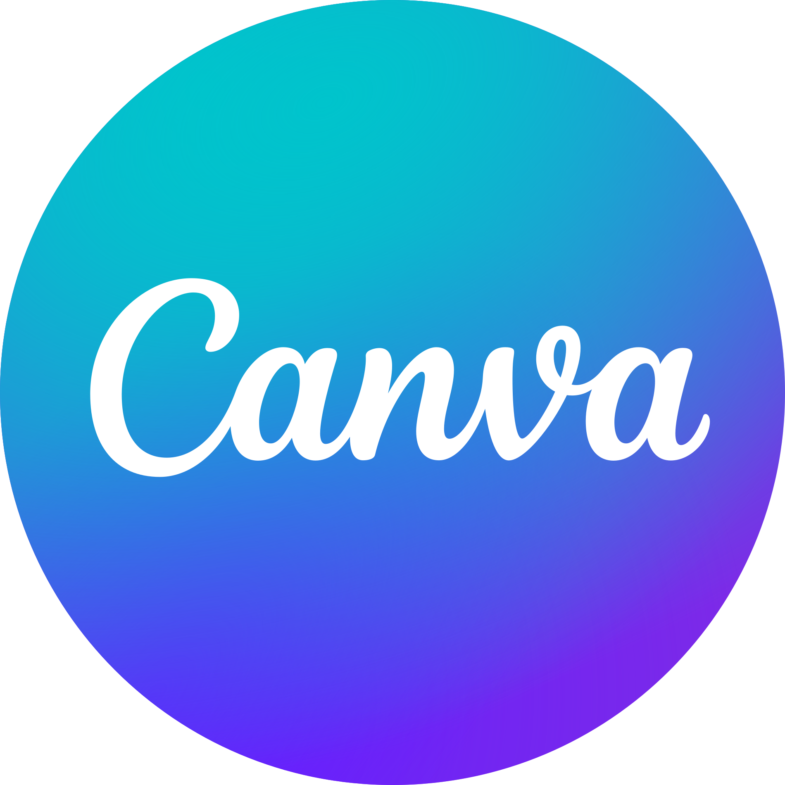
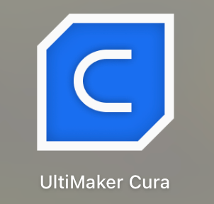
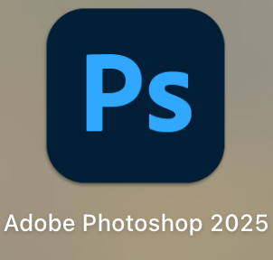

Home›Work›P4 · IT System Redesign Design·2024 IT System Redesign UTM, 2024 Part A: Project documentPart B: Design thinking process Project document Open Part A document on Google Drive Preview Part A document Overview Combining different social media tools and performing digital content editing to create a high-quality brochure.The final prototype was realized through 3D printing, with the model collaboratively developed by the team. In plain languageOur team made a brochure and a 3D-printed model for a redesigned system. Digital literacy Canva UltiMaker Cura Adobe Photoshop 2025 Project 4 of 7 P1P2P3P4P5P6P7 Previous projectP3 · Self PortraitNext projectP5 · SpaceHACK for Sustainability